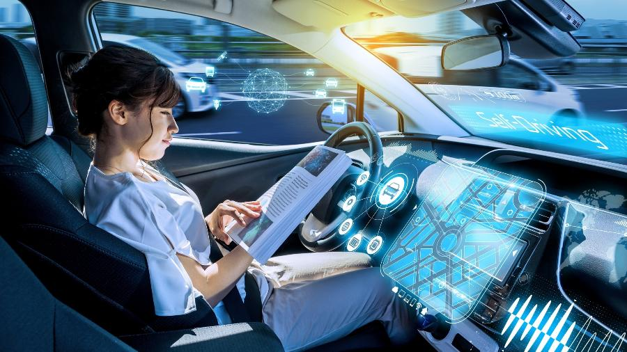

Como funciona?
Os carros autônomos são um dos exemplos mais impactantes da aplicação da IA na sociedade moderna. Esses veículos utilizam uma combinação de sensores, câmeras e algoritmos de aprendizado de máquina para navegar sem a necessidade de um motorista humano. Como a IA é Utilizada
Os carros autônomos dependem de diversas tecnologias, como:
Sensores e Câmeras: Capturam informações sobre o ambiente, como outros veículos, pedestres, sinalização e condições da estrada.
Processamento de Dados: Algoritmos de IA analisam esses dados em tempo real, permitindo que o veículo tome decisões rápidas, como acelerar, frear ou mudar de faixa.
Mapeamento e Localização: Sistemas de GPS e mapeamento ajudam na navegação precisa, essencial para um funcionamento seguro.
Impacto na Sociedade
A implementação de carros autônomos promete transformar o transporte. Alguns dos potenciais benefícios incluem:
Redução de Acidentes: Com a eliminação do erro humano, espera-se que os acidentes de trânsito diminuam significativamente.
Aumento da Eficiência: Veículos autônomos podem otimizar rotas e reduzir congestionamentos.
Mobilidade para Todos: Carros autônomos podem proporcionar acesso ao transporte para pessoas que não podem dirigir, como idosos e pessoas com deficiência.
Contudo, a adoção desses veículos também levanta preocupações sobre segurança, privacidade e as implicações econômicas para a indústria automotiva e o emprego.